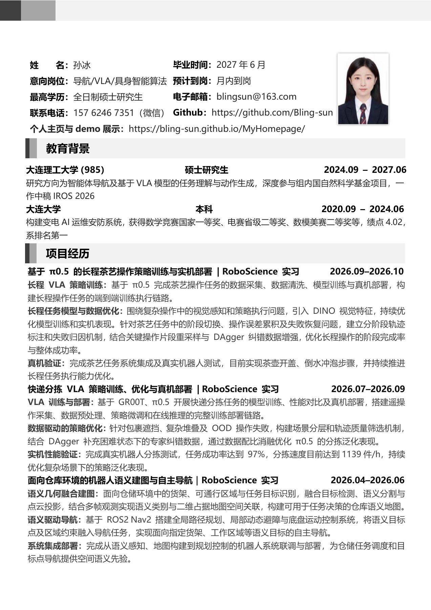
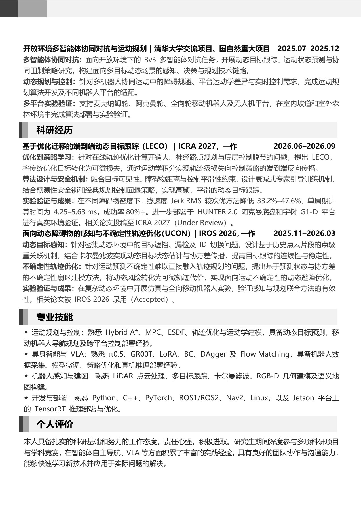

Curriculum Vitae
Original Chinese CV · 2 pages


ROBOTICS / EMBODIED AI
M.Sc. Student · Dalian University of Technology
Robot Navigation · Motion Planning · Vision–Language–Action
 SHENZHEN · CHINA
SHENZHEN · CHINAOriginal Chinese CV · 2 pages

